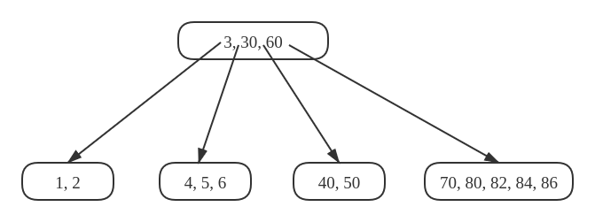
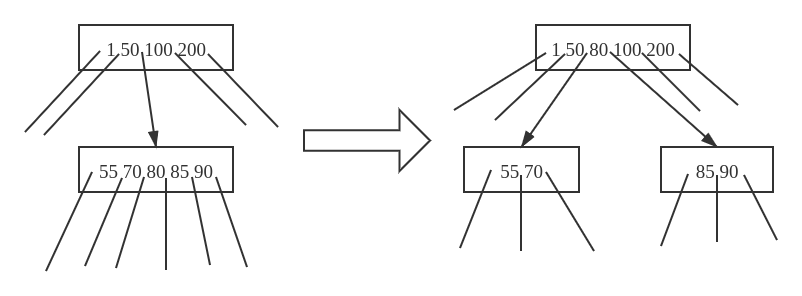
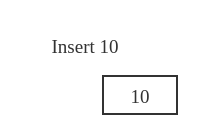
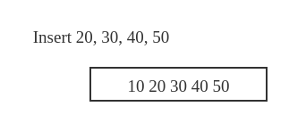
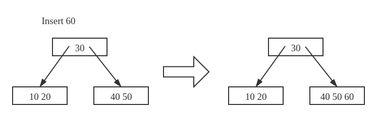
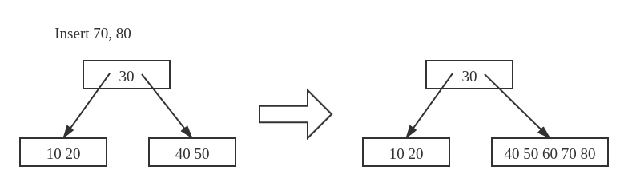
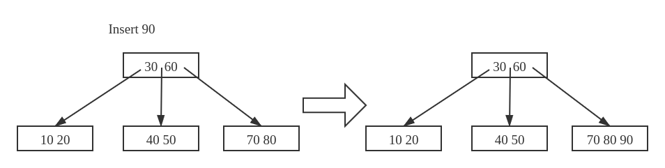
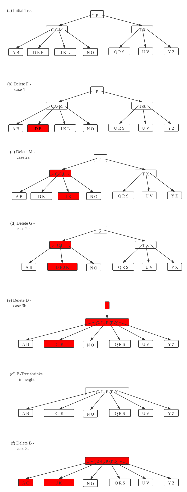

B树
B树是一个自平衡搜索树。
本页内容参考自GeeksForGeeks
问题
设计一种非内存数据结构用于组织硬盘中的大量数据。
思想
大多数其他的自平衡搜索树（如AVL，红黑树）都假设将所有内容放在 主存 中。B树的作用是组织规模大 无法全部放入主存 的数据。当key的数量很多时，数据从硬盘中是以 block 的形式被读取。B树的思想是尽量 减少硬盘读取的次数 。大多数树的操作（搜索、插入、删除、最大、最小等）的时间复杂度是 O(h) ，其中 h 是树的高度。B树是一个很 胖 的树的，通过尽可能增大节点的度数来最小化B树的高度。一般地，B树 节点的度数保持与磁盘block大小相同的数值 。由于B树的高度很小，读取磁盘的次数相比其他平衡二叉搜索树（如AVL、红黑树）有了大幅缩小。
性质
- 所有叶节点在同一层级
- 一个B树的结构由最小度数 t 确定， t 的值由磁盘block大小决定
- 除根节点外的所有节点最少包含 t 个key，根节点可能最少仅包含 1 个key
- 所有节点（包括根节点）最大包含 2t-1 个key
- 每个节点的度数等于其中包含的key的数量 +1
- 节点中的key按升序排列，
k1和k2之间的子节点包含所有位于区间 (k1, k2) 之内的key - 与BST不同的是：B树向上生长，BST向下生长
- 与BST相同的是：增、删、改的复杂度都是 O(\log n)
下面是一个 t=3 的B树示意图：

操作
对于B树，只读操作搜索和遍历的操作方法是显然的（与BST类似）：
搜索
从根节点递归地向下搜索。对于非叶子节点，如果该节点包含目标key，则搜索成功，否则递归搜索包含目标的区间子树。当搜索到月子节点且仍不包含目标key，则搜索失败。
遍历
从左到右递归扫描孩子节点。每两次对孩子节点递归扫描之间扫描二者位于当前节点的区间边界key。
插入
插入操作由于需要添加元素并保持B树本身的结构，做法不那么显然。
设待插入的key为k。类似BST，从根节点向下遍历直到找到一个叶节点，将k插入该节点，但需要保证该节点有足够的容量。
为了保证叶节点的容量总是够用的，增加对节点的 分裂 操作SplitChild，用于分裂某节点的孩子节点。下图展示了分裂的过程，注意到分割点上移的过程导致B树向上生长，而不像BST单纯向下生长。

如上讨论，当增加一个新key，我们从根节点走到叶节点，每当下沉到下一层的节点，先检查目标节点是否已满，如果已满则执行 分裂 操作。
插入算法：
-
初始化
x为根 -
只要
x不是叶节点，做下述操作：a) 找到
x下一层的目标下沉节点yb) 如果
y未满，则将x指向yc) 如果
y已满，则将其分裂并将x指向y的分裂结果之一。此时作为分界点的key被移到x -
第2步的循环当
x为叶节点的时候结束。此时由于我们已经对所有满员节点进行分裂，x必然有至少 1 个key的额外空间，故将k插入x即可。
下图表示一棵B树的构造过程，其中最小节点度数 t=3 ，序列 [10, 20, 30, 40, 50, 60, 70, 80, 90] 顺次插入一棵初始为空的B树。
图解B树的构造
开始时root为空，我们先插入 10：

现在插入 20, 30, 40, 50 ，直到根节点成员数量到达上限 2 \times 3 - 1 = 5 之前，新元素都被插入根节点：

现在插入 60 ，有根节点已满，我们首先将其分裂成两个，然后将 60 插入适当的节点：

现在插入 70, 80 ，期间不会发生分裂：

现在插入 90 ，这次插入会导致一次分裂，位于分界点的key将被上升到父节点：

删除
相比插入操作，删除操作更复杂，原因在于待删除的key可能位于包含非叶节点的任意节点，而每当删除一个位于非叶节点的key时，我们都需要重新调整其孩子节点。
在插入操作中，为了保持B树的特性，当插入key导致节点 过大 时我们执行分裂操作。同样地，我们需要保证删除操作不会导致节点 过小 （唯一例外：根节点允许包含少于 t - 1 个key）。正如在插入操作中需要对包含k的节点中饱和的做特殊处理，删除操作中也需要对包含k的节点（根节点除外）中成员数量达到最低限制的做特殊处理。
删除过程从x包含k的子树中删除k。这个过程需要保证每次在节点x上递归调用该算法，x中key的数量都不少于最小度数 t 。注意到这个限制需要维护比每个节点的最小度数多 1 个key，所以有些情况下一个key需要在递归下沉之前移动到那个孩子节点、这个 更强的条件 允许我们在B树中删除key的过程中仅沿着树枝向下移动一趟而不用回溯（只有一个例外，我们之后会解释）。在下述删除算法中，当根节点x一旦为空（这种情况会发生在2c和3b中），我们就删除x，并让x唯一的子节点成为新的根节点。
删除算法：
-
若键
k在节点x中且x是叶节点，将k从x中删除即可 -
若键
k在节点x中且x是一个内部节点：a) 若区间覆盖
k的子节点y所包含key的数量最少不少于 t ，找到以y为根的子树中k的前驱k0。递归地删除k0，并将x中的k换成k0b) 若
y所包含的key的数量小于 t ，对称地，检查x中紧随k的后继节点z，若z至少具有t个键，则在以z为根的子树中找到k的后继k0。递归删除k0，然后将x中的k替换成k0（我们可以在一趟向下的过程中找到并删除k0）c) 否则，若
y和z的键数都是 t - 1 ，将k和z中的所有键合并到y，如此x同时丢掉k和指向z的指针，y此时键数为 2t - 1 。接着释放z并从y中递归地删除k。 -
若键
k不在内部节点x中，则确定一定包含k的适当子树的根x.c(i)。如果x.c(i)仅具有 t - 1 个键，则根据需要执行步骤 3a 或 3b ，以确保下降到包含至少 t 个键的节点。然后通过递归x的适当孩子来完成：a) 若
x.c(i)仅具有 t - 1 个键， 但有一个键数至少为t的直接同级，从x中下移某个键到x.c(i)，再从x.c(i)的直接左或右同级中上移一个键到x，然后将适当的子节点指针从x.c(i)的直接同级指向其本身。b) 若
x.c(i)与其两个直接同级的键数都是 t - 1 ，将x.c(i)与其中一个合并，期间将x中的一个键下移到合并节点，作为其分界键。
由于B树中的大多数键都在叶子中，因此删除操作最常用于从叶子中删除键，此时“递归”删除只需一趟下行，而无需回溯处理。对于从内部节点删除一个键的情况，在算法下沉的过程中可能必须返回删除键的节点，才能用其前驱后者后继替换键（2a和2b的情况）
图解B树的删除操作

C++实现
/* The deletion function has been compartmentalized into 8 functions for ease
of understanding and clarity
The following functions are exclusive for deletion
In class BTreeNode:
1) Remove
2) RemoveFromLeaf
3) RemoveFromNonLeaf
4) GetPred
5) GetSucc
6) BorrowFromPrev
7) BorrowFromNext
8) Merge
9) FindKey
In class BTree:
1) Remove
The removal of a key from a B-Tree is a fairly complicated process. The program
handles all the 6 different cases that might arise while removing a key.
Testing: The code has been tested using the B-Tree provided in the CLRS book(
included in the main function ) along with other cases.
Reference: CLRS3 - Chapter 18 - (499-502)
It is advised to read the material in CLRS before taking a look at the code. */
#include <iostream>
using namespace std;
// A BTree node
class BTreeNode {
public:
BTreeNode(int _t, bool _leaf); // Constructor
// A function to traverse all nodes in a subtree rooted with this node
void Traverse();
// A function to search a key in subtree rooted with this node.
BTreeNode *Search(int k); // returns NULL if k is not present.
// A function that returns the index of the first key that is greater
// or equal to k
int FindKey(int k);
// A utility function to insert a new key in the subtree rooted with
// this node. The assumption is, the node must be non-full when this
// function is called
void InsertNonFull(int k);
// A utility function to split the child y of this node. i is index
// of y in child array C[]. The Child y must be full when this
// function is called
void SplitChild(int i, BTreeNode *y);
// A wrapper function to remove the key k in subtree rooted with
// this node.
void Remove(int k);
// A function to remove the key present in idx-th position in
// this node which is a leaf
void RemoveFromLeaf(int idx);
// A function to remove the key present in idx-th position in
// this node which is a non-leaf node
void RemoveFromNonLeaf(int idx);
// A function to get the predecessor of the key- where the key
// is present in the idx-th position in the node
int GetPred(int idx);
// A function to get the successor of the key- where the key
// is present in the idx-th position in the node
int GetSucc(int idx);
// A function to fill up the child node present in the idx-th
// position in the C[] array if that child has less than t-1 keys
void Fill(int idx);
// A function to borrow a key from the C[idx-1]-th node and place
// it in C[idx]th node
void BorrowFromPrev(int idx);
// A function to borrow a key from the C[idx+1]-th node and place it
// in C[idx]th node
void BorrowFromNext(int idx);
// A function to merge idx-th child of the node with (idx+1)th child of
// the node
void Merge(int idx);
// Make BTree friend of this so that we can access private members of
// this class in BTree functions
friend class BTree;
private:
int *keys; // An array of keys
int t; // Minimum degree (defines the range for number of keys)
BTreeNode **C; // An array of child pointers
int n; // Current number of keys
bool leaf; // Is true when node is leaf. Otherwise false
};
class BTree {
public:
// Constructor (Initializes tree as empty)
BTree(int _t) {
root = NULL;
t = _t;
}
void Traverse() {
if (root != NULL) root->Traverse();
}
// function to search a key in this tree
BTreeNode *Search(int k) { return (root == NULL) ? NULL : root->Search(k); }
// The main function that inserts a new key in this B-Tree
void Insert(int k);
// The main function that removes a new key in thie B-Tree
void Remove(int k);
private:
BTreeNode *root; // Pointer to root node
int t; // Minimum degree
};
BTreeNode::BTreeNode(int t1, bool leaf1) {
// Copy the given minimum degree and leaf property
t = t1;
leaf = leaf1;
// Allocate memory for maximum number of possible keys
// and child pointers
keys = new int[2 * t - 1];
C = new BTreeNode *[2 * t];
// Initialize the number of keys as 0
n = 0;
}
// A utility function that returns the index of the first key that is
// greater than or equal to k
int BTreeNode::FindKey(int k) {
int idx = 0;
while (idx < n && keys[idx] < k) ++idx;
return idx;
}
// A function to remove the key k from the sub-tree rooted with this node
void BTreeNode::Remove(int k) {
int idx = FindKey(k);
// The key to be removed is present in this node
if (idx < n && keys[idx] == k) {
// If the node is a leaf node - RemoveFromLeaf is called
// Otherwise, RemoveFromNonLeaf function is called
if (leaf)
RemoveFromLeaf(idx);
else
RemoveFromNonLeaf(idx);
} else {
// If this node is a leaf node, then the key is not present in tree
if (leaf) {
cout << "The key " << k << " is does not exist in the tree\n";
return;
}
// The key to be removed is present in the sub-tree rooted with this
// node The flag indicates whether the key is present in the sub-tree
// rooted with the last child of this node
bool flag = ((idx == n) ? true : false);
// If the child where the key is supposed to exist has less that t keys,
// we fill that child
if (C[idx]->n < t) Fill(idx);
// If the last child has been merged, it must have merged with the
// previous child and so we recurse on the (idx-1)th child. Else, we
// recurse on the (idx)th child which now has atleast t keys
if (flag && idx > n)
C[idx - 1]->Remove(k);
else
C[idx]->Remove(k);
}
return;
}
// A function to remove the idx-th key from this node - which is a leaf node
void BTreeNode::RemoveFromLeaf(int idx) {
// Move all the keys after the idx-th pos one place backward
for (int i = idx + 1; i < n; ++i) keys[i - 1] = keys[i];
// Reduce the count of keys
n--;
return;
}
// A function to remove the idx-th key from this node - which is a non-leaf node
void BTreeNode::RemoveFromNonLeaf(int idx) {
int k = keys[idx];
// If the child that precedes k (C[idx]) has atleast t keys,
// find the predecessor 'pred' of k in the subtree rooted at
// C[idx]. Replace k by pred. Recursively delete pred
// in C[idx]
if (C[idx]->n >= t) {
int pred = GetPred(idx);
keys[idx] = pred;
C[idx]->Remove(pred);
}
// If the child C[idx] has less that t keys, examine C[idx+1].
// If C[idx+1] has atleast t keys, find the successor 'succ' of k in
// the subtree rooted at C[idx+1]
// Replace k by succ
// Recursively delete succ in C[idx+1]
else if (C[idx + 1]->n >= t) {
int succ = GetSucc(idx);
keys[idx] = succ;
C[idx + 1]->Remove(succ);
}
// If both C[idx] and C[idx+1] has less that t keys,merge k and all of
// C[idx+1] into C[idx] Now C[idx] contains 2t-1 keys Free C[idx+1] and
// recursively delete k from C[idx]
else {
Merge(idx);
C[idx]->Remove(k);
}
return;
}
// A function to get predecessor of keys[idx]
int BTreeNode::GetPred(int idx) {
// Keep moving to the right most node until we reach a leaf
BTreeNode *cur = C[idx];
while (!cur->leaf) cur = cur->C[cur->n];
// Return the last key of the leaf
return cur->keys[cur->n - 1];
}
int BTreeNode::GetSucc(int idx) {
// Keep moving the left most node starting from C[idx+1] until we reach a
// leaf
BTreeNode *cur = C[idx + 1];
while (!cur->leaf) cur = cur->C[0];
// Return the first key of the leaf
return cur->keys[0];
}
// A function to fill child C[idx] which has less than t-1 keys
void BTreeNode::Fill(int idx) {
// If the previous child(C[idx-1]) has more than t-1 keys, borrow a key
// from that child
if (idx != 0 && C[idx - 1]->n >= t) BorrowFromPrev(idx);
// If the next child(C[idx+1]) has more than t-1 keys, borrow a key
// from that child
else if (idx != n && C[idx + 1]->n >= t)
BorrowFromNext(idx);
// Merge C[idx] with its sibling
// If C[idx] is the last child, merge it with with its previous sibling
// Otherwise merge it with its next sibling
else {
if (idx != n)
Merge(idx);
else
Merge(idx - 1);
}
return;
}
// A function to borrow a key from C[idx-1] and insert it
// into C[idx]
void BTreeNode::BorrowFromPrev(int idx) {
BTreeNode *child = C[idx];
BTreeNode *sibling = C[idx - 1];
// The last key from C[idx-1] goes up to the parent and key[idx-1]
// from parent is inserted as the first key in C[idx]. Thus, the loses
// sibling one key and child gains one key
// Moving all key in C[idx] one step ahead
for (int i = child->n - 1; i >= 0; --i) child->keys[i + 1] = child->keys[i];
// If C[idx] is not a leaf, move all its child pointers one step ahead
if (!child->leaf) {
for (int i = child->n; i >= 0; --i) child->C[i + 1] = child->C[i];
}
// Setting child's first key equal to keys[idx-1] from the current node
child->keys[0] = keys[idx - 1];
// Moving sibling's last child as C[idx]'s first child
if (!child->leaf) child->C[0] = sibling->C[sibling->n];
// Moving the key from the sibling to the parent
// This reduces the number of keys in the sibling
keys[idx - 1] = sibling->keys[sibling->n - 1];
child->n += 1;
sibling->n -= 1;
return;
}
// A function to borrow a key from the C[idx+1] and place
// it in C[idx]
void BTreeNode::BorrowFromNext(int idx) {
BTreeNode *child = C[idx];
BTreeNode *sibling = C[idx + 1];
// keys[idx] is inserted as the last key in C[idx]
child->keys[(child->n)] = keys[idx];
// Sibling's first child is inserted as the last child
// into C[idx]
if (!(child->leaf)) child->C[(child->n) + 1] = sibling->C[0];
// The first key from sibling is inserted into keys[idx]
keys[idx] = sibling->keys[0];
// Moving all keys in sibling one step behind
for (int i = 1; i < sibling->n; ++i)
sibling->keys[i - 1] = sibling->keys[i];
// Moving the child pointers one step behind
if (!sibling->leaf) {
for (int i = 1; i <= sibling->n; ++i) sibling->C[i - 1] = sibling->C[i];
}
// Increasing and decreasing the key count of C[idx] and C[idx+1]
// respectively
child->n += 1;
sibling->n -= 1;
return;
}
// A function to merge C[idx] with C[idx+1]
// C[idx+1] is freed after merging
void BTreeNode::Merge(int idx) {
BTreeNode *child = C[idx];
BTreeNode *sibling = C[idx + 1];
// Pulling a key from the current node and inserting it into (t-1)th
// position of C[idx]
child->keys[t - 1] = keys[idx];
// Copying the keys from C[idx+1] to C[idx] at the end
for (int i = 0; i < sibling->n; ++i) child->keys[i + t] = sibling->keys[i];
// Copying the child pointers from C[idx+1] to C[idx]
if (!child->leaf) {
for (int i = 0; i <= sibling->n; ++i) child->C[i + t] = sibling->C[i];
}
// Moving all keys after idx in the current node one step before -
// to fill the gap created by moving keys[idx] to C[idx]
for (int i = idx + 1; i < n; ++i) keys[i - 1] = keys[i];
// Moving the child pointers after (idx+1) in the current node one
// step before
for (int i = idx + 2; i <= n; ++i) C[i - 1] = C[i];
// Updating the key count of child and the current node
child->n += sibling->n + 1;
n--;
// Freeing the memory occupied by sibling
delete (sibling);
return;
}
// The main function that inserts a new key in this B-Tree
void BTree::Insert(int k) {
// If tree is empty
if (root == NULL) {
// Allocate memory for root
root = new BTreeNode(t, true);
root->keys[0] = k; // Insert key
root->n = 1; // Update number of keys in root
} else // If tree is not empty
{
// If root is full, then tree grows in height
if (root->n == 2 * t - 1) {
// Allocate memory for new root
BTreeNode *s = new BTreeNode(t, false);
// Make old root as child of new root
s->C[0] = root;
// Split the old root and move 1 key to the new root
s->SplitChild(0, root);
// New root has two children now. Decide which of the
// two children is going to have new key
int i = 0;
if (s->keys[0] < k) i++;
s->C[i]->InsertNonFull(k);
// Change root
root = s;
} else // If root is not full, call InsertNonFull for root
root->InsertNonFull(k);
}
}
// A utility function to insert a new key in this node
// The assumption is, the node must be non-full when this
// function is called
void BTreeNode::InsertNonFull(int k) {
// Initialize index as index of rightmost element
int i = n - 1;
// If this is a leaf node
if (leaf == true) {
// The following loop does two things
// a) Finds the location of new key to be inserted
// b) Moves all greater keys to one place ahead
while (i >= 0 && keys[i] > k) {
keys[i + 1] = keys[i];
i--;
}
// Insert the new key at found location
keys[i + 1] = k;
n = n + 1;
} else // If this node is not leaf
{
// Find the child which is going to have the new key
while (i >= 0 && keys[i] > k) i--;
// See if the found child is full
if (C[i + 1]->n == 2 * t - 1) {
// If the child is full, then split it
SplitChild(i + 1, C[i + 1]);
// After split, the middle key of C[i] goes up and
// C[i] is splitted into two. See which of the two
// is going to have the new key
if (keys[i + 1] < k) i++;
}
C[i + 1]->InsertNonFull(k);
}
}
// A utility function to split the child y of this node
// Note that y must be full when this function is called
void BTreeNode::SplitChild(int i, BTreeNode *y) {
// Create a new node which is going to store (t-1) keys
// of y
BTreeNode *z = new BTreeNode(y->t, y->leaf);
z->n = t - 1;
// Copy the last (t-1) keys of y to z
for (int j = 0; j < t - 1; j++) z->keys[j] = y->keys[j + t];
// Copy the last t children of y to z
if (y->leaf == false) {
for (int j = 0; j < t; j++) z->C[j] = y->C[j + t];
}
// Reduce the number of keys in y
y->n = t - 1;
// Since this node is going to have a new child,
// create space of new child
for (int j = n; j >= i + 1; j--) C[j + 1] = C[j];
// Link the new child to this node
C[i + 1] = z;
// A key of y will move to this node. Find location of
// new key and move all greater keys one space ahead
for (int j = n - 1; j >= i; j--) keys[j + 1] = keys[j];
// Copy the middle key of y to this node
keys[i] = y->keys[t - 1];
// Increment count of keys in this node
n = n + 1;
}
// Function to traverse all nodes in a subtree rooted with this node
void BTreeNode::Traverse() {
// There are n keys and n+1 children, travers through n keys
// and first n children
int i;
for (i = 0; i < n; i++) {
// If this is not leaf, then before printing key[i],
// traverse the subtree rooted with child C[i].
if (leaf == false) C[i]->Traverse();
cout << " " << keys[i];
}
// Print the subtree rooted with last child
if (leaf == false) C[i]->Traverse();
}
// Function to search key k in subtree rooted with this node
BTreeNode *BTreeNode::Search(int k) {
// Find the first key greater than or equal to k
int i = 0;
while (i < n && k > keys[i]) i++;
// If the found key is equal to k, return this node
if (keys[i] == k) return this;
// If key is not found here and this is a leaf node
if (leaf == true) return NULL;
// Go to the appropriate child
return C[i]->Search(k);
}
void BTree::Remove(int k) {
if (!root) {
cout << "The tree is empty\n";
return;
}
// Call the remove function for root
root->Remove(k);
// If the root node has 0 keys, make its first child as the new root
// if it has a child, otherwise set root as NULL
if (root->n == 0) {
BTreeNode *tmp = root;
if (root->leaf)
root = NULL;
else
root = root->C[0];
// Free the old root
delete tmp;
}
return;
}
测试代码：
// Driver program to test above functions
int main() {
BTree t(3); // A B-Tree with minium degree 3
t.Insert(1);
t.Insert(3);
t.Insert(7);
t.Insert(10);
t.Insert(11);
t.Insert(13);
t.Insert(14);
t.Insert(15);
t.Insert(18);
t.Insert(16);
t.Insert(19);
t.Insert(24);
t.Insert(25);
t.Insert(26);
t.Insert(21);
t.Insert(4);
t.Insert(5);
t.Insert(20);
t.Insert(22);
t.Insert(2);
t.Insert(17);
t.Insert(12);
t.Insert(6);
cout << "Traversal of tree constructed is\n";
t.Traverse();
cout << endl;
t.Remove(6);
cout << "Traversal of tree after removing 6\n";
t.Traverse();
cout << endl;
t.Remove(13);
cout << "Traversal of tree after removing 13\n";
t.Traverse();
cout << endl;
t.Remove(7);
cout << "Traversal of tree after removing 7\n";
t.Traverse();
cout << endl;
t.Remove(4);
cout << "Traversal of tree after removing 4\n";
t.Traverse();
cout << endl;
t.Remove(2);
cout << "Traversal of tree after removing 2\n";
t.Traverse();
cout << endl;
t.Remove(16);
cout << "Traversal of tree after removing 16\n";
t.Traverse();
cout << endl;
return 0;
}
输出：
Traversal of tree constructed is
1 2 3 4 5 6 7 10 11 12 13 14 15 16 17 18 19 20 21 22 24 25 26
Traversal of tree after removing 6
1 2 3 4 5 7 10 11 12 13 14 15 16 17 18 19 20 21 22 24 25 26
Traversal of tree after removing 13
1 2 3 4 5 7 10 11 12 14 15 16 17 18 19 20 21 22 24 25 26
Traversal of tree after removing 7
1 2 3 4 5 10 11 12 14 15 16 17 18 19 20 21 22 24 25 26
Traversal of tree after removing 4
1 2 3 5 10 11 12 14 15 16 17 18 19 20 21 22 24 25 26
Traversal of tree after removing 2
1 3 5 10 11 12 14 15 16 17 18 19 20 21 22 24 25 26
Traversal of tree after removing 16
1 3 5 10 11 12 14 15 17 18 19 20 21 22 24 25 26